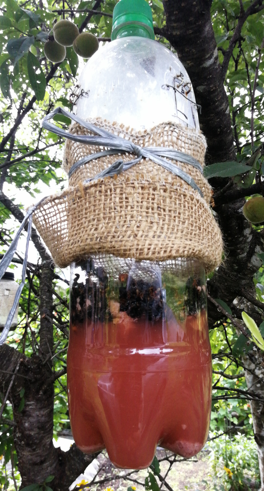
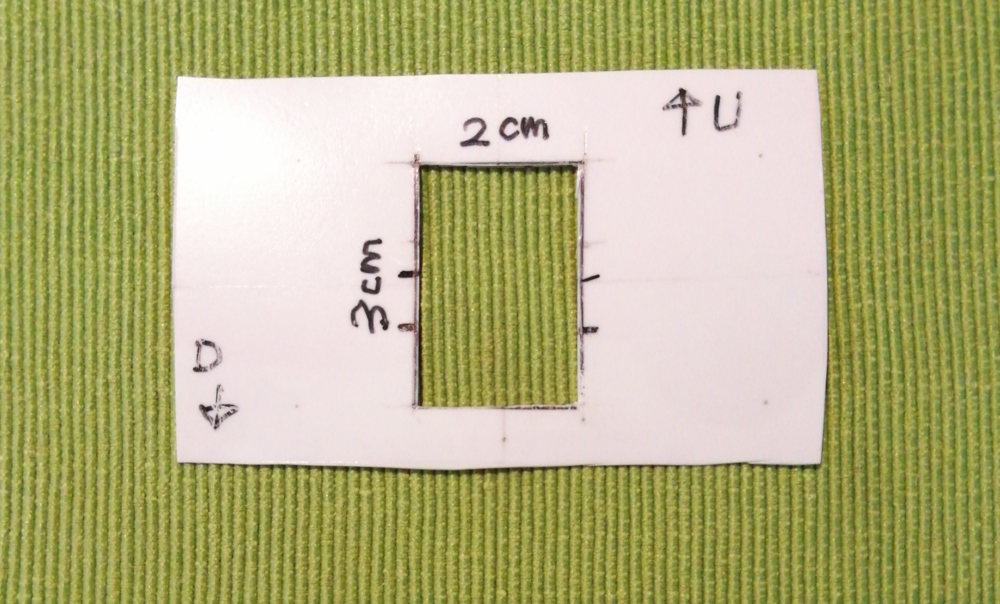
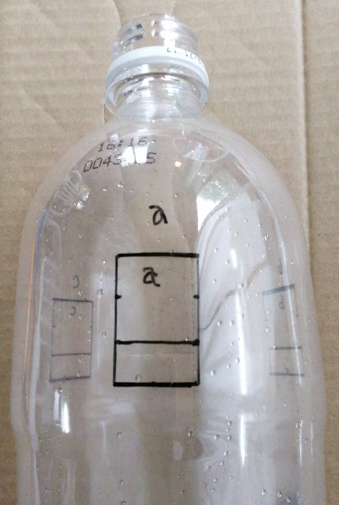
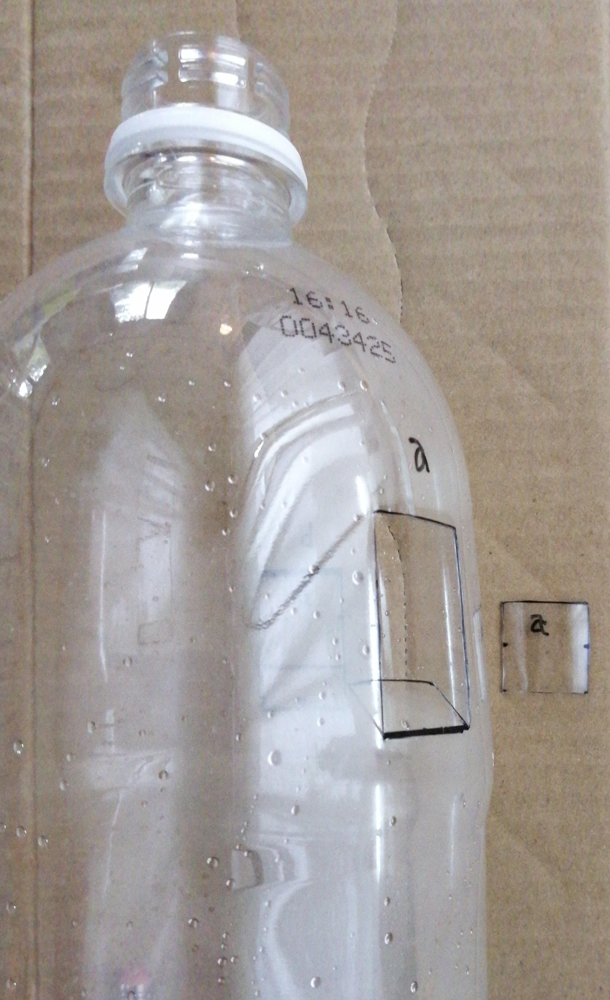
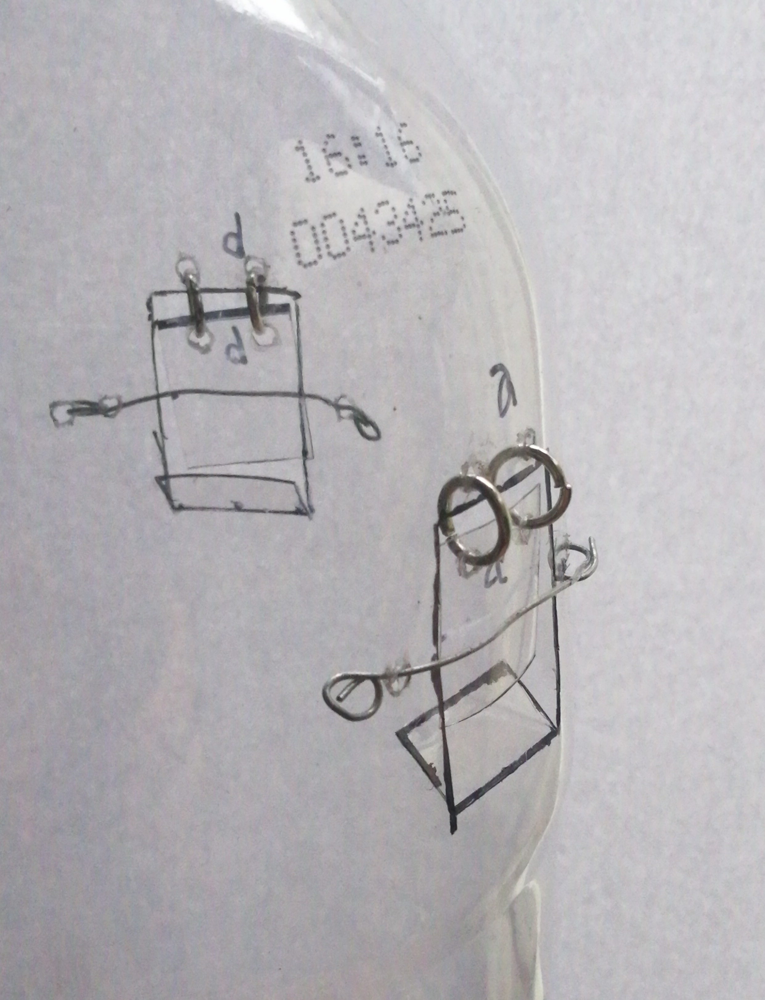

スズメバチトラップ – ver. 2021
1 Ver.2021トラップ
ずいぶん昔からペットボトルでいろいろなタイプのスズメバチトラップを自作し使っていますが、どれもこれも共通の問題がありました。
せっかくトラップに入ったのに、飛び回って暴れるうちに偶然出口を見つけて 脱出 してしまう個体が少なくないことです。 とくにトラップ内に蛾やハチの死骸が溜まってくると、 誘引液に溺れにくくなって逃げ出す頻度が高まります。
このバージョンの目的は：
いったん入ったハチの脱出をできるだけ少なくすること
2021バージョンのトラップはこの点においては今のところ好調なので紹介します。
2 外観
図1が外観です。基本はふつうのペットボトルベースのトラップですが、ポイントが2点あります。
- 入口を 一方向ドア にしました。外側から内側へはハチが軽くドアに触れるだけで入れますが、逆方向（内側から外側）へはドアがスイングしないようになっています。ハト小屋などで飛び込み口を一方向通行にする「 ハトトラップ 」と同じ原理です。
- 入口のすぐ下に 根回し麻布 を巻き付けてスズメバチが止まりやすくしています。

図1: スズメバチトラップ2021。いったん入ると出られない。
図1だけで作り方などはお分かりいただけると思いますが、 詳しい情報は「4」をごらんください。
なお、 市販のスズメバチトラップ （注1）の多くは入口の形状を工夫することで、ハチの脱出を抑止するようになっています。コストが問題にならない場合には市販の製品も選択肢の一つです。
3 結果
- 誘引液が発酵してくる10日目頃から、多数のスズメバチが捕獲されるようになりました。
- 観察している限りでは、脱出ハチはほどんどいない模様（動体センサー付きカメラでモニター中）
- トラップ近くに蛾がたくさん誘引されますが、一方向ドアを押してトラップ内に入る蛾の数はごく少数です
- レシピのせいでコバエがたくさん入ります。しかし蛾に比べると死骸のボリュームは小さいので、トラップ機能を低下させる負荷は大きくありません
3.1 問題点・今後の課題
- 入口に外向きのひさしが無いので、大雨のときには雨水が侵入して 誘引液が薄くなります。
- 可動部があるために、誘引液を交換する際に従来のタイプよりもペットボトルの洗浄に気を使います。
4 （参考資料）一方向ドアつきトラップの作り方
備忘のために制作関連の情報を取りまとめておきます。
4.1 部材
| 部材 | 備考 |
|---|---|
| ペットボトル | 1.5L炭酸用 |
| 丸カン | 6mm（百均） |
| 根巻き麻布 | トラップの胴巻き用 |
| 針金 | 細目の番手 |
4.2 工具など
| 工具など | 備考 |
|---|---|
| ラジオペンチ | できれば2個（丸カン加工用） |
| ニッパ | |
| カッターナイフ | |
| キリ | 三ツ目 |
| その他 | 油性マジック, ハサミ, ピンセット |
4.3 入口の寸法
入口は３箇所。各入口の寸法は表3のとおりです。
| 項目 | 寸法（W x H） |
|---|---|
| 入口開口部サイズ | 20mm x 30mm |
| 内向きのタラップ | 20mm x 10mm |
| ゲート板 | 20mm x 20mm |
4.4 ペットボトルの工作手順
型紙作成 ：入口の墨付け用に簡単な型紙を作ります。素材はプレーンヨーグルトのフタ。

図2: トラップ入口作成用の型紙
墨付け ：上の型紙を使って油性マジックで入口を墨付けすします。入口の場所決めのために、ペットボトルの胴回りと同じ長さの ヒモ を用意し、3等分した箇所にマジックで印をつけておくと作業が楽。なお型紙に 上下のマーク があるのは、下のラインをペットボトルのラベル貼り付け用の段差ラインにそろえるため。

図3: ３箇所に入口用の墨付けをする
カッティング ：カッターで入口を切り抜きます。切り抜いたパーツ（図4 の右側に置いてあるプラ片）はこの後 一方向ドア として使うので、アルファベット記号を打っておきます。タラップ部は水平にはせず、45度程度に軽く折り曲げておきます（脱出をできるだけ難しくするため）。

図4: カット済みの入口
ドアの取付け ：これが一番手間がかかります。キリでドア部と本体に２つずつ２ミリ程度の穴を開け、それに6mmの 丸カン （百均）を通します。この時に、ラジオペンチが2個あると便利です。ドア部のタテの縁はハサミで1mm程度カットします。工作精度が低くてもドアが本体にぶつからないようにするためです。

図5: 入口に丸カンでドアをぶら下げる この写真みずらい 要交換
最後の仕上げ ：ドアが内側から外にスイングしないように細手の針金で ストッパー をつけます。

図6: 一方向ドアの完成形
- 根巻き麻布とりつけ ：入口直下の胴回りに「根巻き麻布」をしばりつけます（注2）。
4.5 誘引液のレシピ
ぶどうジュース、日本酒、酢、砂糖ベースのレシピに、グレープカルピスとハチミツを追加しました。
| Ingredient | Volume |
|---|---|
| ぶどうジュース | 500cc |
| 日本酒 | 150cc |
| 酢 | 100cc |
| 砂糖 | 100g |
| ハチミツ | 大さじ2杯 |
| グレープカルピス | 50cc程度 |
| 合計 | ≒900cc |
5 おわりに
実はこれまでいろいろなアイデアでトラップを試作してほとんど失敗してきました。
その失敗の歴史はそれ自体、他の方々に参考になると思いますし、面白おかしいと思いますが、ちょっと長くなるので、機会があればまた後ほどということにします。